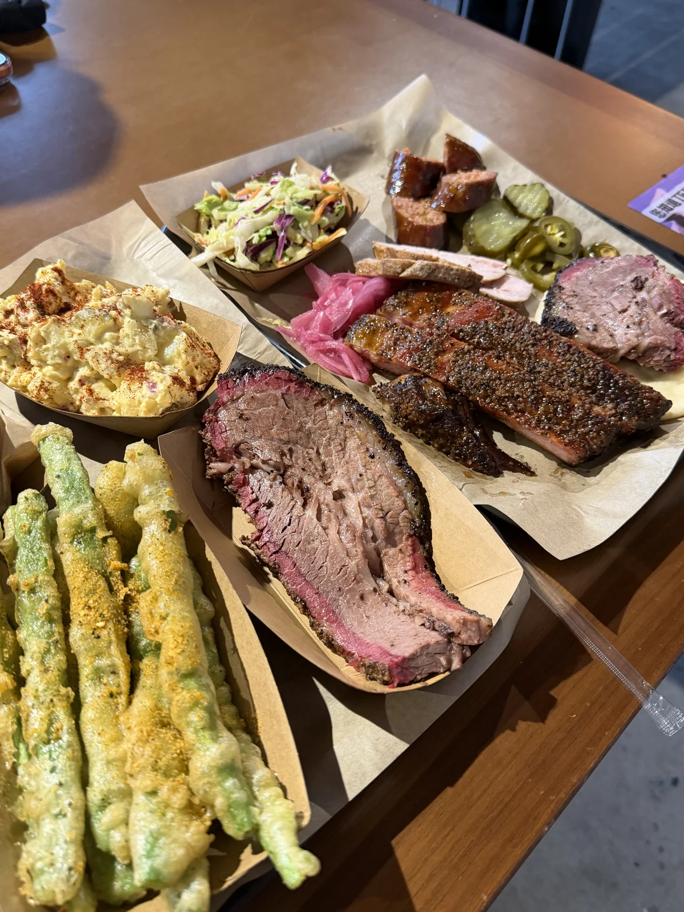

昌平大黑山环线 + 黑山烤房 / 山脚咖啡
春季周末 · 先上山出汗，再下山吃肉喝咖啡的平衡型一日线
北京·昌平
山野烤房咖啡
6.5h
57km
6.9km / 425m / 2.2h
L4 可执行
五道口出发


看图理解这条线



行程卡
| 字段 | 内容 |
|---|---|
| 区域 | 北京·昌平 |
| 主题 | 山野烤房咖啡 |
| 总时长 | 6.5h |
| 预估自驾 | 57km |
| 徒步参数 | 6.9km / 425m / 2.2h |
| 强度 | 轻中度 |
| 适合 | 周末自驾 / 想走一点但不想太累 / 喜欢“徒步 + 吃喝”完整节奏 |
| 一句话结论 | 体力段和休闲段衔接自然，适合把“爬山”变成一整天的好玩安排。 |
路线摘要
体力段和休闲段衔接自然，适合把“爬山”变成一整天的好玩安排。
🏞️ 目的地介绍
🏞️ 大黑山这条线的优点，不是某一个“网红打卡点”特别炸，而是整条山线很顺：从北京五道口出发自驾压力不算大，六只脚轨迹页和结构化 info都能确认它是一条约 6.9km、累计爬升 425m 的 easy 级成熟线路，起终点也很接近，适合做“轻认真”徒步。山体本身属于北方春季很讨喜的类型：不需要超强体能，却有足够开阔感和山脊节奏。
✨ 活动介绍
☕ 这条路线最妙的地方在于下山后的收口。小红书上关于黑山烤房、昌平大黑山咖啡的内容很集中，叙事非常统一：上山出汗，下山吃肉或喝杯山脚咖啡。它不是“为了凑一个休闲点而硬加”的活动，而是天然把徒步日程变成更完整的一天。
✨ 活动节奏
☕ 这条线的收尾很自然：山线本体 2 小时出头，下山后直接接午餐或山脚咖啡，不需要再额外安排第二段活动。锚点建议：吃饭去黑山烤房（昌平区烤肉热门榜第 1，¥160/人，周末需错峰），想慢下来就去延寿咖啡（延寿镇村落里，免费停车、可带娃带宠）。两家都在山脚附近，不用再开长途。
商户评分、招牌、营业时间、差评风险等详细信息统一放在页面最底部的「点评信息卡」里。
推荐行程安排
| 序号 | 活动 | 时长 | 备注 |
|---|---|---|---|
| 1 | 从五道口出发，自驾去昌平起点片区 🚗 | 1.5h | 建议早一点出门，山上体感会更舒服 |
| 2 | 大黑山环线 6.9km / 425m ⛰️ | 2.2h | 当天唯一体力主线，节奏清楚，不再叠第二条山线 |
| 3 | 山脚恢复 + 简单补水 | 0.5h | 给后面的午餐 / 咖啡留出缓冲 |
| 4 | 黑山烤房午餐或山脚咖啡 ☕ | 1.5h | 当天的情绪收口，适合慢下来 |
| 5 | 机动散步 / 返程准备 | 0.8h | 看体力和排队情况决定是否延长停留 |
补证入口已直接放在对应介绍段落里：徒步看六只脚，内容氛围看小红书，临出发校验商家再看点评 / 携程 / Bing。
为什么这个方案值得保留
- 六只脚定量信息清楚：6.9km / ↑425m / easy，且起终点差很小，符合“自驾优先环线”的硬规则。
- 小红书里“大黑山环线 + 黑山烤房 / 咖啡”的搭配非常自然，说明这不是孤立 POI，而是一种被反复验证的出游组合。
- 对周末一日线来说，强度、车程、休闲内容三者平衡得最好。
风险与临门一脚
- 餐饮 / 咖啡营业状态与排队热度，建议出发前用点评再补一眼。
- 若当天风大或状态一般，可以缩短山下停留，不影响主线完成度。
如果需要再做一轮公开存在性补证，可以直接看 携程搜索、Bing 备用搜索；若要确认餐饮/咖啡细节，再补开 点评搜索 即可。
🍽️ 点评信息卡（商户锚点）
从多源（点评搜索页 + 商户页 + 小红书）合并的锚点数据，临出发前复核营业状态和排队情况。
🍽️ 点评信息卡
- 招牌菜
- 烟熏猪肋排、牛胸肉、牛肋排、碎肉汉堡、手撕烟熏牛胸肉汉堡、德式烟熏烤肠、薯角、酸黄瓜。
- 团购 / 套餐
- 当前点评页未显示常规团购套餐；结合小红书里“一周只开三天，不外卖，不上团购”的内容，它更像目的地型餐饮，而不是靠低价团购拉客的店。
- 菜单结构
- 可稳定反推出“美式烟熏烤肉 + 汉堡 + 配菜”的完整结构，适合徒步后直接高满足感收尾。
- 好评关键词
- 果木烟熏味足、肉香稳定、吃完还能顺手接村里散步、免费停车、自驾友好、宠物友好。
- 差评 / 风险
- 周末排队长、价格不算便宜、需要先扫码点餐再排号，高峰时室内偏热，体验非常依赖错峰。
延寿咖啡
昌平区咖啡
口味 4.4 环境 4.6 服务 4.4
点评榜单昌平区咖啡好评榜 · 第6名
›营业中 10:00-18:00›
免费停车可带宠物有儿童游乐区现磨咖啡
延寿镇北庄村（距延寿寺盘龙松风景区约800m）
到店☕ 咖啡
- 招牌饮品
- 手冲、拿铁、开心果 Dirty、冷萃咖啡、栗子牛奶、澳白、苹果派。
- 团购 / 套餐
- 当前页面未见显性团购套餐，更像到店单点型咖啡馆，适合徒步后做恢复站。
- 菜单结构
- 点评显示“菜单(3)”入口，虽需进 App 看细项，但从推荐项已能判断是精品咖啡 + 小甜点结构。
- 好评关键词
- 隐匿村落、复古怀旧氛围感、阳光洒落很出片、可带宠物、有儿童游乐区。
- 差评 / 风险
- 下午 15 点后不一定最适合久坐，部分饮品分量偏克制，更适合恢复站而不是长时间停留目的地。